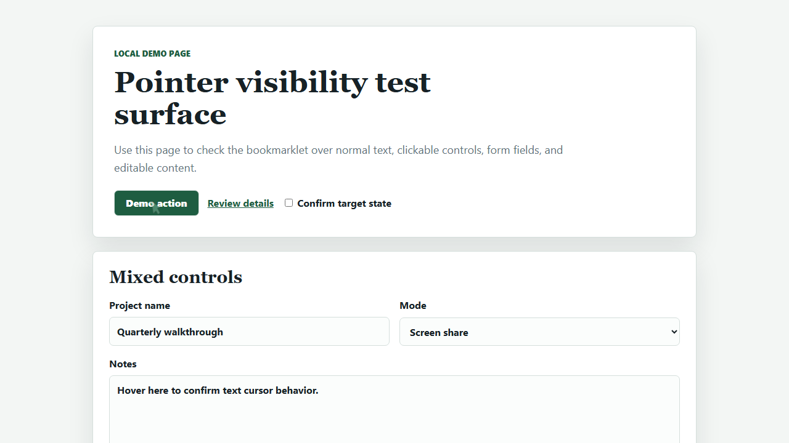

Highlight Mouse Pointer Bookmarklet
Make your cursor easier to follow during screen shares, walkthroughs, reviews, and recordings.
Then open any regular web page and click the saved bookmarklet to toggle the pointer highlight.

How it works
- Drag the install link to your browser's bookmarks bar.
- Open a regular web page where you want a visible pointer.
- Click the saved bookmarklet once to enable it, then again to remove it.
What changes
While active, the normal cursor is hidden and a translucent green marker follows the pointer. It morphs into an arrow over links, buttons, labels, selects, and other clickable targets.
Text fields keep normal text-cursor behavior: the highlight hides over inputs, textareas, and editable text.
Try it locally
The local demo page includes links, buttons, form controls, editable text, and dense content for checking pointer behavior.
Open the demo pagePrivacy and limits
The bookmarklet runs only in the current page. It does not send data anywhere or require an account, extension, server, or build step.
Bookmarklets may not run on browser-restricted pages, extension stores, internal browser pages, or pages with strict security policies.
Source
The install link is generated from
highlightMousePointerBookmarklet.toString(), so the
bookmarklet source lives in one file: bookmarklet.js.
Show generated bookmarklet URL
Loading...